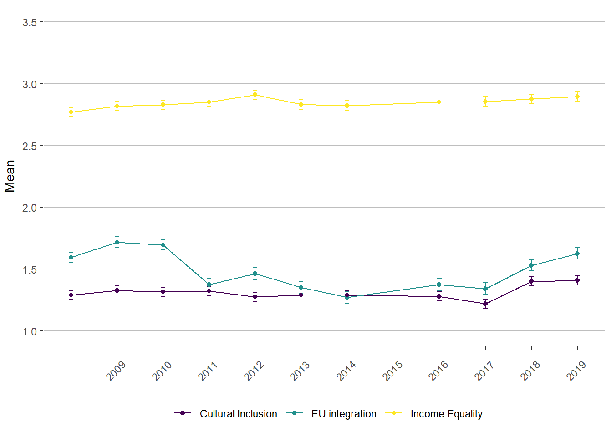

Descriptive statistics
Thijmen Jeroense
Last compiled on 14 november, 2024
Goal
Recreate the descriptive statistics in the paper
Set up and data import
library(tidyverse)
library(data.table)
library(patchwork)
library(ggrepel)
library(viridis)
#data
load("results/riclpm/23-03-13_lavaan-main-results.Rdata")
load("results/riclpm/23-03-14_lavaan-moderation-results.Rdata")Data preperation
Create plot data.
plot_data <- MyData %>%
select(nomem_encr,
starts_with("eu"),
starts_with("cult"),
starts_with("inc_diff"),
starts_with("educ"),
starts_with("poltalk_a")
) %>%
select(-starts_with("educ_dis"),
-starts_with("educ_sim")) %>%
pivot_longer(cols = 2:166,
names_to = c("measure", "wave"),
names_pattern = "(.+)\\_(.+)",
values_to = "value") %>%
pivot_wider(id_cols = c("nomem_encr", "wave"),
names_from = "measure",
values_from = "value")Descriptive statistics
Political Attitudes
Trend plot
#create time_cohort
plot_data <- plot_data %>%
mutate(year = as.numeric(wave),
year = ifelse(year == 1, 2008, year),
year = ifelse(year == 2, 2009, year),
year = ifelse(year == 3, 2010, year),
year = ifelse(year == 4, 2011, year),
year = ifelse(year == 5, 2012, year),
year = ifelse(year == 6, 2013, year),
year = ifelse(year == 7, 2014, year),
year = ifelse(year == 8, 2016, year),
year = ifelse(year == 9, 2017, year),
year = ifelse(year == 10, 2018, year),
year = ifelse(year == 11, 2019, year)) %>%
mutate(educ_rec = ifelse(educ < 6, 6, educ))
#create plot DF
plot_attitudes <- list()
plot_attitudes[[1]] <- plot_data %>%
group_by(year) %>%
summarise(mean = mean(eu, na.rm = T),
n = sum(!is.na(eu)),
se = 1.96 * (sd(eu, na.rm=T)/sqrt(sum(!is.na(eu)))),
name = "EU integration")
plot_attitudes[[2]] <- plot_data %>%
group_by(year) %>%
summarise(mean = mean(cult, na.rm = T),
n = sum(!is.na(cult)),
se = 1.96 * (sd(cult, na.rm=T)/sqrt(sum(!is.na(cult)))),
name = "Cultural Inclusion")
plot_attitudes[[3]] <- plot_data %>%
group_by(year) %>%
summarise(mean = mean(inc_diff, na.rm = T),
n = sum(!is.na(inc_diff)),
se = 1.96 * (sd(inc_diff, na.rm=T)/sqrt(sum(!is.na(inc_diff)))),
name = "Income Equality")
plot_attitudes <- plot_attitudes %>%
rbindlist()
#mean plot
trend_att <- plot_attitudes %>%
ggplot(aes(x = year, y = mean, group = name)) +
geom_line(aes(colour = name)) +
geom_errorbar(aes(ymin = mean - se,
ymax = mean + se,
colour = name),
width = 0.1) +
geom_point(aes(colour = name)) +
scale_y_continuous(breaks = c(1, 1.5, 2, 2.5, 3, 3.5),
limits = c(1, 3.5)) +
scale_x_continuous(breaks = c(2009:2019), name = element_blank()) +
scale_colour_viridis(option = "D", discrete = T) +
labs(x = "Year", y = "Mean") +
theme(
plot.subtitle = element_text(
size = rel(1.2),
hjust = 0.5,
margin = margin(0, 0, 20, 0)
),
text = element_text(),
plot.background = element_rect(fill = "#FFFFFF"),
panel.background = element_rect(fill = "#FFFFFF"),
panel.border = element_rect(
fill = NA,
color = "#FFFFFF",
size = 0.5,
linetype = "solid"
),
axis.title = element_text(size = rel(1)),
axis.title.y = element_text(angle = 90, vjust = 2),
axis.title.x = element_text(vjust = -0.2),
axis.text = element_text(),
axis.text.x = element_text(angle = 45, vjust = 0.2),
axis.line.x = element_blank(),
axis.line.y = element_blank(),
axis.ticks = element_line(),
panel.grid.major = element_line(colour = "grey"),
panel.grid.major.x = element_blank(),
panel.grid.minor = element_blank(),
legend.position = "bottom",
legend.direction = "horizontal",
legend.box = "vertical",
legend.title = element_blank(),
strip.background = element_rect(colour = "#FFFFFF", fill = "#FFFFFF"),
strip.text = element_text(face = "bold"),
legend.key = element_rect(colour = "#FFFFFF", fill = "#FFFFFF")
)
trend_att
ggsave(plot = trend_att,
filename = "plots/descriptives/trend_att.eps",
dpi = 600,
height = 4,
width = 5)
#save bw version
#mean plot
trend_att_bw <- plot_attitudes %>%
ggplot(aes(x = year, y = mean, group = name)) +
geom_line(aes(colour = name)) +
geom_errorbar(aes(ymin = mean - se,
ymax = mean + se,
colour = name),
width = 0.1) +
geom_point(aes(colour = name)) +
scale_y_continuous(breaks = c(1, 1.5, 2, 2.5, 3, 3.5),
limits = c(1, 3.5)) +
scale_x_continuous(breaks = c(2009:2019), name = element_blank()) +
scale_colour_grey() +
labs(x = "Year", y = "Mean") +
theme(
plot.subtitle = element_text(
size = rel(1.2),
hjust = 0.5,
margin = margin(0, 0, 20, 0)
),
text = element_text(),
plot.background = element_rect(fill = "#FFFFFF"),
panel.background = element_rect(fill = "#FFFFFF"),
panel.border = element_rect(
fill = NA,
color = "#FFFFFF",
size = 0.5,
linetype = "solid"
),
axis.title = element_text(size = rel(1)),
axis.title.y = element_text(angle = 90, vjust = 2),
axis.title.x = element_text(vjust = -0.2),
axis.text = element_text(),
axis.text.x = element_text(angle = 45, vjust = 0.2),
axis.line.x = element_blank(),
axis.line.y = element_blank(),
axis.ticks = element_line(),
panel.grid.major = element_line(colour = "grey"),
panel.grid.major.x = element_blank(),
panel.grid.minor = element_blank(),
legend.position = "bottom",
legend.direction = "horizontal",
legend.box = "vertical",
legend.title = element_blank(),
strip.background = element_rect(colour = "#FFFFFF", fill = "#FFFFFF"),
strip.text = element_text(face = "bold"),
legend.key = element_rect(colour = "#FFFFFF", fill = "#FFFFFF")
)
ggsave(plot = trend_att_bw,
filename = "plots/descriptives/trend_att_bw.eps",
dpi = 600,
height = 4,
width = 5)Change scores heatmap
Datapreperation for heatmap
plot_data <- plot_data %>%
group_by(nomem_encr) %>%
mutate(wave = as.numeric(wave)) %>%
arrange(nomem_encr, wave) %>%
mutate(eu_change = eu - dplyr::lag(eu),
eu_change = ifelse(eu_change > 2, 3, eu_change),
eu_change = ifelse(eu_change < -2, -3, eu_change),
cult_change = cult - dplyr::lag(cult),
cult_change = ifelse(cult_change > 2, 3, cult_change),
cult_change = ifelse(cult_change < -2, -3, cult_change),
inc_change = inc_diff - dplyr::lag(inc_diff),
inc_change = ifelse(inc_change > 2, 3, inc_change),
inc_change = ifelse(inc_change < -2, -3, inc_change)
) %>%
ungroup()Heatmap plot
#create list to store the dfs in
plot_data_heatmap <- list()
#eu_change
plot_data_heatmap[[1]] <- plot_data %>%
select(nomem_encr, eu_change, year) %>%
filter(year > 2008) %>% #filter out the first year (no change scores possible)
group_by(year) %>% #group by year
count(eu_change) %>% #create counts per year of change values
mutate(name = "EU Integration") %>% #create identifier
rename(change = eu_change) %>% #rename eu_change into change score
ungroup()
#cult_change
plot_data_heatmap[[2]] <- plot_data %>%
select(nomem_encr, cult_change, year) %>%
filter(year > 2008) %>%
group_by(year) %>%
count(cult_change) %>%
mutate(name = "Cultural Inclusion") %>%
rename(change = cult_change) %>%
ungroup()
#inc_change
plot_data_heatmap[[3]] <- plot_data %>%
select(nomem_encr, inc_change, year) %>%
filter(year > 2008) %>%
group_by(year) %>%
count(inc_change) %>%
mutate(name = "Income Equality") %>%
rename(change = inc_change) %>%
ungroup()
plot_data_heatmap <- plot_data_heatmap %>%
rbindlist() %>%
filter(!is.na(change))
change_att_heatmap <- plot_data %>%
count(year, name = "n_year") %>%
right_join(plot_data_heatmap, by = "year") %>%
group_by(year, name) %>%
mutate(sum_n = sum(n)) %>%
ungroup() %>%
mutate(per_change = (n/sum_n)*100,
change = factor(change, levels = -3:3, labels = c("-3 | -4", "-2", "-1", "0", "1", "2", "3 | 4"))) %>%
ggplot(aes(x = as.factor(year), y = change, fill = per_change)) +
geom_raster() +
geom_text(aes(label = round(per_change, 1)),
colour = "black",
size = 5) +
facet_wrap(vars(name)) +
labs(fill = "% yearly \n observations",y = expression(Delta*" Attitude"), x = "Year") +
scale_fill_viridis(option = "D", limits = c(0,65)) +
# scale_x_continuous(breaks = c(2009:2019), name = element_blank()) +
theme(axis.text.x = element_text(angle = 45, vjust = 0.2),
plot.title = element_text(color="black",hjust=0,vjust=1, size=rel(2)),
plot.background = element_rect(fill="#FFFFFF"),
panel.background = element_rect(fill="#FFFFFF"),
panel.border = element_rect(fill=NA,color="#FFFFFF", size=0.5, linetype="solid"),
panel.grid.major = element_blank(),
panel.grid.minor = element_blank(),
strip.text = element_text(face="bold", size=10,lineheight=5.0, colour = "black"),
axis.line = element_blank(),
axis.ticks = element_blank(),
axis.text = element_text(color="black"),
axis.text.y = element_text(hjust=1),
legend.text = element_text(color="black", size=rel(1.3)),
legend.background = element_rect(fill="#FFFFFF"),
legend.position = "bottom",
strip.background=element_rect(colour="#A9A9A9",fill="#A9A9A9"))
#show plot
change_att_heatmap
#save plot
ggsave(plot = change_att_heatmap,
filename = "plots/descriptives/heatmap_change_att.eps",
dpi = 600,
height = 8,
width = 16)#save bw version
change_att_heatmap_bw <- plot_data %>%
count(year, name = "n_year") %>%
right_join(plot_data_heatmap, by = "year") %>%
group_by(year, name) %>%
mutate(sum_n = sum(n)) %>%
ungroup() %>%
mutate(
per_change = (n / sum_n) * 100,
change = factor(
change,
levels = -3:3,
labels = c("-3 | -4", "-2", "-1", "0", "1", "2", "3 | 4")
),
per_change_factor = cut(
per_change,
breaks = c(0,
10,
20,
30,
40,
50,
60,
70,
80,
90,
100)),
per_change_factor = case_when(
per_change_factor == "(0,10]" ~ "0-10%",
per_change_factor == "(10,20]" ~ "10-20%",
per_change_factor == "(20,30]" ~ "20-30%",
per_change_factor == "(30,40]" ~ "30-40%",
per_change_factor == "(40,50]" ~ "40-50%",
per_change_factor == "(50,60]" ~ "50-60%",
per_change_factor == "(60,70]" ~ "60-70%",
)) %>%
ggplot(aes(x = as.factor(year),
y = change,
fill = per_change_factor)) +
geom_raster(alpha = 0.8) +
geom_text(aes(label = round(per_change, 1)),
colour = "white",
size = 5) +
facet_wrap(vars(name)) +
labs(fill = "% yearly \n observations",y = expression(Delta*" Attitude"), x = "Year") +
scale_fill_grey() +
# scale_x_continuous(breaks = c(2009:2019), name = element_blank()) +
theme(axis.text.x = element_text(angle = 45, vjust = 0.2),
plot.title = element_text(color="black",hjust=0,vjust=1, size=rel(2)),
plot.background = element_rect(fill="#FFFFFF"),
panel.background = element_rect(fill="#FFFFFF"),
panel.border = element_rect(fill=NA,color="#FFFFFF", size=0.5, linetype="solid"),
panel.grid.major = element_blank(),
panel.grid.minor = element_blank(),
strip.text = element_text(face="bold", size=10,lineheight=5.0, colour = "black"),
axis.line = element_blank(),
axis.ticks = element_blank(),
axis.text = element_text(color="black"),
axis.text.y = element_text(hjust=1),
legend.text = element_text(color="black", size=rel(1.3)),
#legend.background = element_rect(fill="#FFFFFF"),
legend.position = "bottom",
strip.background=element_rect(colour="#A9A9A9",fill="#A9A9A9"))
change_att_heatmap_bw
ggsave(plot = change_att_heatmap_bw,
filename = "plots/descriptives/heatmap_change_bw_att.pdf",
dpi = 300,
height = 8,
width = 16)CDN network changes
#create mean for education and political discussion
plot_data <- plot_data %>%
rowwise() %>%
mutate(cdn_educ = mean(c_across(starts_with("educ_a")), na.rm = T),
cdn_pol = mean(c_across(starts_with("poltalk_a")), na.rm = T)) %>%
ungroup()Trend plot
#create list to store information.
cdn_trend <- list()
#create plot df for education
cdn_trend[[1]] <- plot_data %>%
group_by(year) %>%
summarise(mean = mean(cdn_educ, na.rm = T),
se = 1.96 * (sd(cdn_educ, na.rm=T)/sqrt(sum(!is.na(cdn_educ)))),
name = "Education") %>%
ungroup()
#create plot df for political discussion.
cdn_trend[[2]] <- plot_data %>%
group_by(year) %>%
summarise(mean = mean(cdn_pol, na.rm = T),
se = 1.96 * (sd(cdn_pol, na.rm=T)/sqrt(sum(!is.na(cdn_pol)))),
name = "Political Discussion") %>%
ungroup()
#create educ trend plot
cdn_educ_trend <- cdn_trend %>%
bind_rows() %>%
filter(name == "Education") %>%
ggplot(aes(x = as.numeric(year), y = mean)) +
geom_point() +
geom_line() +
geom_errorbar(aes(ymin = mean - se, ymax = mean + se), width = .1) +
scale_y_continuous(breaks = 10:14, limits = c(10,14)) +
scale_x_continuous(breaks = c(2008:2019), name = element_blank()) +
labs(y = "Years") +
theme(
plot.subtitle = element_text(
size = rel(1.2),
hjust = 0.5,
margin = margin(0, 0, 20, 0)
),
text = element_text(),
plot.background = element_rect(fill = "#FFFFFF"),
panel.background = element_rect(fill = "#FFFFFF"),
panel.border = element_rect(
fill = NA,
color = "#FFFFFF",
size = 0.5,
linetype = "solid"
),
axis.title = element_text(size = rel(1)),
axis.title.y = element_text(angle = 90, vjust = 2),
axis.title.x = element_text(vjust = -0.2),
axis.text = element_text(),
axis.text.x = element_text(angle = 45, vjust = 0.2),
axis.line.x = element_blank(),
axis.line.y = element_blank(),
axis.ticks = element_line(),
panel.grid.major = element_line(colour = "grey"),
panel.grid.major.x = element_blank(),
panel.grid.minor = element_blank(),
legend.position = "bottom",
legend.direction = "horizontal",
legend.box = "vertical",
legend.title = element_blank(),
strip.background = element_rect(colour = "#FFFFFF", fill = "#FFFFFF"),
strip.text = element_text(face = "bold"),
legend.key = element_rect(colour = "#FFFFFF", fill = "#FFFFFF")
)
#save trend plot
ggsave(plot = cdn_educ_trend,
filename = "plots/descriptives/cdn_educ_trend.eps",
dpi = 600,
height = 4,
width = 4)Changes heatmap plot
#create plot data
plot_data <- plot_data %>%
group_by(nomem_encr) %>%
mutate(educ_change = cdn_educ - dplyr::lag(cdn_educ),
pol_change = cdn_pol - dplyr::lag(cdn_pol),
) %>%
ungroup() %>%
mutate(educ_change_rec = ifelse(educ_change < -5, 1, educ_change),
educ_change_rec = ifelse((educ_change < -4) & (educ_change >= -5), 2, educ_change_rec),
educ_change_rec = ifelse((educ_change < -3) & (educ_change >= -4), 3, educ_change_rec),
educ_change_rec = ifelse((educ_change < -2) & (educ_change >= -3), 4, educ_change_rec),
educ_change_rec = ifelse((educ_change < -1) & (educ_change >= -2), 5, educ_change_rec),
educ_change_rec = ifelse((educ_change < 0) & (educ_change >= -1), 6, educ_change_rec),
educ_change_rec = ifelse((educ_change < 1) & (educ_change >= 0), 7, educ_change_rec),
educ_change_rec = ifelse((educ_change < 2) & (educ_change >= 1), 8, educ_change_rec),
educ_change_rec = ifelse((educ_change < 3) & (educ_change >= 2), 9, educ_change_rec),
educ_change_rec = ifelse((educ_change < 4) & (educ_change >= 3), 10, educ_change_rec),
educ_change_rec = ifelse((educ_change < 5) & (educ_change >= 4), 11, educ_change_rec),
educ_change_rec = ifelse(educ_change > 5, 12, educ_change_rec),
educ_change_rec = factor(educ_change_rec, levels = 1:12, labels = c("<-5", "-4/-5", "-3/-4","-2/-3",
"-1/-2", "0/-1", "0/1", "1/2",
"2/3", "3/4", "4/5", ">5")
),
pol_change_rec = ifelse(pol_change < -5, 1, pol_change),
pol_change_rec = ifelse((pol_change < -4) & (pol_change >= -5), 2, pol_change_rec),
pol_change_rec = ifelse((pol_change < -3) & (pol_change >= -4), 3, pol_change_rec),
pol_change_rec = ifelse((pol_change < -2) & (pol_change >= -3), 4, pol_change_rec),
pol_change_rec = ifelse((pol_change < -1) & (pol_change >= -2), 5, pol_change_rec),
pol_change_rec = ifelse((pol_change < 0) & (pol_change >= -1), 6, pol_change_rec),
pol_change_rec = ifelse((pol_change < 1) & (pol_change >= 0), 7, pol_change_rec),
pol_change_rec = ifelse((pol_change < 2) & (pol_change >= 1), 8, pol_change_rec),
pol_change_rec = ifelse((pol_change < 3) & (pol_change >= 2), 9, pol_change_rec),
pol_change_rec = ifelse((pol_change < 4) & (pol_change >= 3), 10, pol_change_rec),
pol_change_rec = ifelse((pol_change < 5) & (pol_change >= 4), 11, pol_change_rec),
pol_change_rec = ifelse(pol_change > 5, 12, pol_change_rec),
pol_change_rec = factor(pol_change_rec, levels = 1:12, labels = c("<-5", "-4/-5", "-3/-4","-2/-3",
"-1/-2", "0/-1", "0/1", "1/2",
"2/3", "3/4", "4/5", ">5")
))#create list to store the dfs in
plot_data_cdn_heatmap <- list()
#CDN Education
plot_data_cdn_heatmap[[1]] <- plot_data %>%
select(nomem_encr, educ_change_rec, year) %>%
filter(year > 2008) %>% #filter out the first year (no change scores possible)
group_by(year) %>% #group by year
count(educ_change_rec) %>% #create counts per year of change values
mutate(name = "CDN Education") %>% #create identifier
rename(change = educ_change_rec) %>% #rename eu_change into change score
ungroup()
#CDN Political discussion
plot_data_cdn_heatmap[[2]] <- plot_data %>%
select(nomem_encr, pol_change_rec, year) %>%
filter(year > 2008) %>%
group_by(year) %>%
count(pol_change_rec) %>%
mutate(name = "CDN Political discussion") %>%
rename(change = pol_change_rec) %>%
ungroup()
#combine plot data into one file
plot_data_cdn_heatmap <- plot_data_cdn_heatmap %>%
rbindlist() %>%
filter(!is.na(change))
#create heatmap
change_cdn_heatmap <- plot_data %>%
count(year, name = "n_year") %>%
right_join(plot_data_cdn_heatmap, by = "year") %>%
filter(name == "CDN Education") %>%
group_by(year) %>%
mutate(sum_n = sum(n)) %>%
ungroup() %>%
mutate(per_change = (n/sum_n)*100) %>%
ggplot(aes(x = as.factor(year), y = change, fill = per_change)) +
geom_raster() +
geom_text(aes(label = round(per_change, 1)), colour = "black") +
labs(fill = "% of yearly observations",y = expression(Delta)) +
scale_fill_viridis(option = "D") +
scale_x_discrete(name = element_blank()) +
theme(axis.text.x = element_text(angle = 45, vjust = 0.2),
plot.title = element_text(color="black",hjust=0,vjust=1, size=rel(2)),
plot.background = element_rect(fill="#FFFFFF"),
panel.background = element_rect(fill="#FFFFFF"),
panel.border = element_rect(fill=NA,color="#FFFFFF", size=0.5, linetype="solid"),
panel.grid.major = element_blank(),
panel.grid.minor = element_blank(),
strip.text = element_text(face="bold", size=10,lineheight=5.0, colour = "black"),
strip.background = element_rect(fill="#FFFFFF", colour="#808080", size=1),
axis.line = element_blank(),
axis.ticks = element_blank(),
axis.text = element_text(color="black"),
axis.text.y = element_text(hjust=1),
legend.text = element_text(color="black", size=rel(1.3)),
legend.background = element_rect(fill="#FFFFFF"),
legend.position = "bottom")
#show plot
change_cdn_heatmap
#save plot
ggsave(plot = change_cdn_heatmap,
filename = "plots/descriptives/heatmap_change_cdn.eps",
dpi = 600,
height = 6,
width = 6)#create bw version
#create heatmap
change_cdn_heatmap_bw <- plot_data %>%
count(year, name = "n_year") %>%
right_join(plot_data_cdn_heatmap, by = "year") %>%
filter(name == "CDN Education") %>%
group_by(year) %>%
mutate(sum_n = sum(n)) %>%
ungroup() %>%
mutate(
per_change = (n / sum_n) * 100,
per_change_factor = cut(
per_change,
breaks = c(0,
10,
20,
30,
40,
50,
60,
70,
80,
90,
100)),
per_change_factor = case_when(
per_change_factor == "(0,10]" ~ "0-10%",
per_change_factor == "(10,20]" ~ "10-20%",
per_change_factor == "(20,30]" ~ "20-30%",
per_change_factor == "(30,40]" ~ "30-40%",
per_change_factor == "(40,50]" ~ "40-50%",
per_change_factor == "(50,60]" ~ "50-60%",
per_change_factor == "(60,70]" ~ "60-70%",
)) %>%
ggplot(aes(x = as.factor(year),
y = change,
fill = per_change_factor)) +
geom_raster(alpha = 0.8) +
geom_text(aes(label = round(per_change, 1)), colour = "white") +
labs(fill = "% yearly \n observations",y = expression(Delta*" Attitude"), x = "Year") +
scale_fill_grey() +
scale_x_discrete(name = element_blank()) +
theme(axis.text.x = element_text(angle = 45, vjust = 0.2),
plot.title = element_text(color="black",hjust=0,vjust=1, size=rel(2)),
plot.background = element_rect(fill="#FFFFFF"),
panel.background = element_rect(fill="#FFFFFF"),
panel.border = element_rect(fill=NA,color="#FFFFFF", size=0.5, linetype="solid"),
panel.grid.major = element_blank(),
panel.grid.minor = element_blank(),
strip.text = element_text(face="bold", size=10,lineheight=5.0, colour = "black"),
strip.background = element_rect(fill="#FFFFFF", colour="#808080", size=1),
axis.line = element_blank(),
axis.ticks = element_blank(),
axis.text = element_text(color="black"),
axis.text.y = element_text(hjust=1),
legend.text = element_text(color="black", size=rel(1.3)),
legend.background = element_rect(fill="#FFFFFF"),
legend.position = "bottom")
#show plot
change_cdn_heatmap_bw
#save plot
ggsave(plot = change_cdn_heatmap_bw,
filename = "plots/descriptives/heatmap_change_cdn_bw.eps",
dpi = 600,
height = 6,
width = 6)
#save plot
ggsave(plot = change_cdn_heatmap_bw,
filename = "plots/descriptives/heatmap_change_cdn_bw.pdf",
dpi = 300,
height = 6,
width = 7)
#show plot
change_cdn_heatmap_bw
Copyright © 2024 Jeroense Thijmen